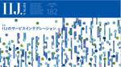
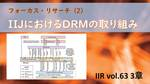
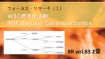
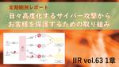

IIJ Engineers Blog
https://eng-blog.iij.ad.jp
IIJ Engineers Blogは、開発・運用の現場から、IIJのエンジニアが技術的な情報や取り組みについて 執筆する公式ブログです。
フィード
AIを使って「ちょっぴりだけ」ツールを便利にしたい：Zabbixとの連携 2
2
IIJ Engineers Blog
執筆中にお休みしたため・・ 本記事なのですが、執筆したのは2024年6月時点の情報となります。 実は執筆してる最中に持病の定期治療時期に差し掛かってしまい、気づけば入院中何もできなくなりまして・・少し...
12時間前
突撃！隣のチームビルディング ～IIJ名古屋支社 技術4課編～
IIJ Engineers Blog
はじめに 三河からこんにちは。名古屋支社の北河です。 新年度も始まり、新入社員や新規案件でチームが誕生したり変化したりしていると思います。皆さんのチームは “ちゃんと” チーム...
2日前
IIJはJANOG54 Meeting in NARAに展示ブース参加します！（展示紹介動画アリ）
IIJ Engineers Blog
IIJは、2024年7月3日（水）～ 7月5日（金）に奈良で開催されるJANOG54 Meetingでブース出展します。 公式Webサイト：JANOG54 Meeting in NARA 日程：202...
5日前
Gmailに届かなくなる？最近の電子メールで何が起っているのか？ 539
IIJ Engineers Blog
ここしばらく「2024年6月よりGoogle (Gmail) が迷惑メール対策を強化、メールが届かなくなるかも」というややセンセーショナルなニュースが流れていました。本件、掘り下げるとややこしい話では...
8日前

サービスインテグレーションって何だ？（IIJ.news）
IIJ Engineers Blog
インターネット関連の最新動向や技術情報をお届けする広報誌「IIJ.news」。6月発行号（Vol.182）の特集は「IIJのサービスインテグレーション」です。 「システムインテグレーション（SI）」は...
8日前

IIJにおけるDRMの取り組み：フォーカス・リサーチ（IIR vol.63 3章）
IIJ Engineers Blog
2024年6月に発行したIIJの技術レポートIIR vol.63 3章では「IIJにおけるDRMの取り組み」をお届けします。 本報告のポイント インターネット上で配信されるデジタルコンテンツの改ざん・...
12日前

W3C標準化活動 RDF Dataset Canonicalization：フォーカス・リサーチ（IIR vol.63 2章）
IIJ Engineers Blog
2024年6月に発行したIIJの技術レポートIIR vol.63 2章では「W3C標準化活動：RDF Dataset Canonicalization」をお届けします。 本報告のポイント 2024年5...
12日前

日々高度化するサイバー攻撃からお客様を保護するための取り組み：定期観測レポート（IIR vol.63 1章） 8
IIJ Engineers Blog
2024年6月に発行したIIJの技術レポートIIR vol.63 1章では「日々高度化するサイバー攻撃からお客様を保護するための取り組み」をお届けします。 本報告のポイント 電子メールは引き続きビジネ...
12日前
IIJの季刊技術レポート「IIR vol.63」（2024年6月号） 発行のご挨拶
IIJ Engineers Blog
※本記事は、2024年6月発行のIIR Vol.63より「エグゼクティブサマリ」を転載したものです。 エグゼクティブサマリ 2022年11月30日、OpenAI社からChatGPTが発表され、その能力...
12日前
私の仕事紹介：インターネットを支えるIIJバックボーンのエンジニア 3
IIJ Engineers Blog
皆様お久しぶりです。初めての方は初めまして。ネットワーク技術部の竹﨑です。IIJには2020年度に新卒で入社しIIJバックボーンに携わる部署で働いております。過去にはこのような記事を投稿しております。...
13日前